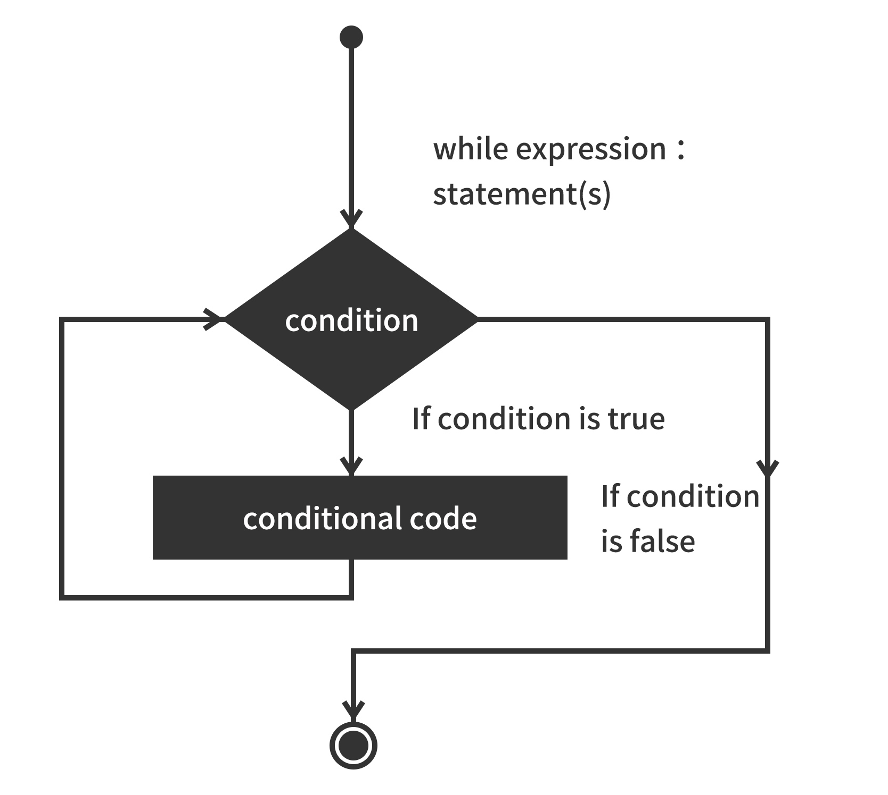

bună While循环语句
bună编程中while语句用于循环执行程序，即在某条件下，循环执行某段程序，以处理需要重复处理的相同任务。其基本形式为:
while(判断条件) {
执⾏语句......
}
执⾏语句可以是单个语句或语句块。判断条件可以是任何表达式，任何⾮零、或⾮空(null)的值均为true。
当判断条件假false时，循环结束。
执⾏流程图如下:

var count = 0;
while (count <9){
print "The count is:"+count ;
count = count + 1 ;}
print "Good bye!";
The count is:0
The count is:1
The count is:2
The count is:3
The count is:4
The count is:5
The count is:6
The count is:7
The count is:8
Good bye!